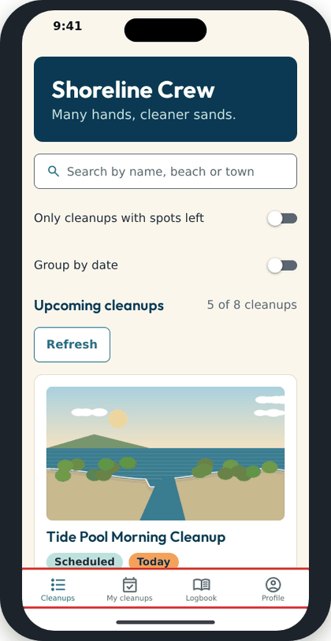

Session 10: File-Based Routing, Tabs and Modals
How to teach the first session of Part 2: a Part 1 refresher and the catch-up for learners who start here, then Lesson 4.1 (Expo Router's files are screens, a stack with its header, Link and the router, params that are always strings, typed routes that make a broken link a compile error) and Lesson 4.2 (a JavaScript tab bar in a (tabs) group inside the root stack, screens on top of the tabs, honest placeholder tabs, a modal with a Done that works however it was opened), with two headless routing labs built on Expo Router's own testing library.
How to Use This Guide
- Session 10 opens Part 2, Navigation, Data and Devices (Sessions 10 to 17). It starts with a 15-minute Part 1 refresher and the catch-up check for learners who join here, then the usual rhythm for both lessons: frame (the goal and one mental model) → live demo (you type, they follow) → guided lab (a kit lab: new practice, never the lesson's own project) → start the lesson's own project. The rest of each project, the exercises, quizzes and journals are homework.
- Type, do not paste. Every command below was run to produce the output under it, in a learner's terminal (Node 24), on the course API and on copies of the app exactly as a learner has it after Lesson 4.1 and after Lesson 4.2. Where the lesson shows the same command, the kit's output is the lesson's card, word for word. Ask for a prediction before every run.
- No phone was used to make this kit, and today needs none: the lessons run in the web preview (Expo Go still cannot reach the API at localhost until Lesson 5.1). What only a phone shows (the native header and back button, the iPhone's swipe from the left edge, Android's system back, the modal sliding up as a card) is described the way the lessons describe it, from the React Navigation and Expo Router documentation. Have your own phone with Expo Go if you want to show the tabs and the modal, which need no data.
- Keep
lesson_11.htmlandlesson_12.htmlopen for the tables (files and addresses; the stack on three platforms; tabs versus stack; on top of the tabs or inside a tab; the edges table; modals on three platforms). Labs live inlabs/module-10/:starter/folders andTASKS.mdare handouts,solution/folders are yours until the session is over. - The routing labs run headless:
npm testbuilds a real Expo Router app from the lab'sapp/folder with Expo Router's own testing library (expo-router/testing-library), opens it at an address and presses its buttons. One difference from the course app, said in every lab: no Metro runs in a lab, so there are no typed routes, and params are written out (useLocalSearchParams<{ id: string }>()).
Part 2 can run on its own, so some learners finished Part 1 with you and some meet Shoreline Crew today. A learner without the code from Lesson 3.2 cannot start Lesson 4.1. Before: send the catch-up page (the workbook's Start Here page and labs/module-10/l4_0-starting-with-part-2/TASKS.md) a week ahead to anyone new, and to anyone whose own app is broken: they unzip lesson-11-start, run npm ci, and reply with the last line of the check. In the room: the catch-up check gets five minutes of the opening; a NOT READY machine pairs with a ready neighbor for the 4.1 demo and lab (the lab needs only the shared lab install, not the course app) and gets fixed during the break. After: a learner who used lesson-11-start uses lesson-12-start next time if today's project is not finished.
Before the Session
- ☐ A week before: to new learners and anyone whose Part 1 app does not run, send the catch-up steps (below) and ask for the last line of
node labs/module-10/l4_0-starting-with-part-2/check_environment.mjs. Everyone else: "bring your shoreline-crew as Lesson 3.2 left it, withnpx tsc --noEmitclean". - ☐ Files to hand out: the
labs/module-10/folder without thesolution/folders;lesson-11-start.zip(the code at the start of 4.1) andlesson-12-start.zip(the start of 4.2, for anyone who does not finish 4.1's project) from the course site's downloads, on a stick in case the network fails. - ☐ Run the kit check once:
python3 labs/check_labs.py module-10from this kit's folder (13 runs, about four minutes: the catch-up check on a fresh copy oflesson-11-startwith a private API, NOT READY withoutnpm ciand READY with it; both routing labs' starters fail as declared and the solutions pass their tests, type checks and lint). - ☐ Projector machine: your shoreline-crew at the start of 4.1 (yours, or
lesson-11-start), two terminals ("api" runningnode server.ts, "crew" withnpx expo start), the web preview in a phone-sized browser window, VS Code's explorer showingsrc/app; a second copy at the end of 4.1 (lesson-12-start) for the 4.2 demo, so the 4.1 project you start in the room is not in the way. - ☐ Board, before learners arrive: Part 1 in one line per module (Module 1: React Native and the toolchain; Module 2: native components, layout, images, touch, themes; Module 3: FlatList and FlashList, paging); the file-to-address table (
index.tsx→/,cleanups/[id].tsx→/cleanups/e08,+not-found.tsx→ everything else,_layout.tsx→ no address); and an empty box labeled "Root Stack" that you fill during 4.2. - ☐ Print or share: the workbook (its Start Here page has Part 1 in one page, the refresher and the catch-up checklist), sticky notes for the exit ticket.
| Symptom | Cause | Fix |
|---|---|---|
Did you mean '"/cleanups/[id]"'? (TS2820) | A misspelled route in a Link | The suggested address. Never edit .expo/types/router.d.ts. |
tsc rejects a link to a route that exists ("/" | … | "/_sitemap") | Metro was stopped when the file was added: stale route types | Start npx expo start, then run tsc again. |
string | string[] | undefined (TS2345) on a param | useLocalSearchParams() without the route's name | useLocalSearchParams<'/cleanups/[id]'>(); not as string. |
Too many screens defined. Route "x" is extraneous. | The layout names a file that does not exist (yet, or a typo) | Expected in 4.1 Step 1 and 4.2 Step 2 until the files exist; otherwise the name. |
No route named "x" exists in nested children | A layout names a file that moved or is misspelled; the tab vanishes | The file's name without .tsx; the warning lists the names that exist. |
| A header titled "(tabs)", two headers on Profile | The root layout still names index | <Stack.Screen name="(tabs)" options={{ headerShown: false }} /> |
| No tab bar on the first screen, header "index", no warning | src/app/index.tsx copied, not moved | Delete the old file (git mv avoids it). |
git mv or mkdir fails on (tabs) or [id] | The shell reads the brackets or parentheses | Put the path in quotes: "src/app/(tabs)". |
Starting with Part 2: the Catch-up Page
For learners who join the course at Part 2, or whose Part 1 app is broken. CODE ONLY: everyone continues from the course's own code at the end of Lesson 3.2, which is exactly the start of Lesson 4.1, the download lesson-11-start (it holds both shoreline-api and shoreline-crew; shoreline-api.zip alone is the same API). The steps are in the workbook's Start Here page and in labs/module-10/l4_0-starting-with-part-2/TASKS.md, and the kit's check runs them on a fresh copy of the download:
- Unzip
lesson-11-start.zipinto a fresh course foldershoreline, so thatshoreline/shoreline-api/server.tsandshoreline/shoreline-crew/package.jsonexist; copy the kit'slabs/folder next to them (andnpm installonce inshoreline/labs, the shared lab install, if they have not done it in Part 1). - In
shoreline-crew: copy.env.exampleto.env.local(keephttp://localhost:4000for the web preview; the download's README says the same; Lesson 5.1 covers phones), thennpm ci. - Terminal 1 in
shoreline-api:node server.ts. Terminal 2 inshoreline: the environment check from Session 1, copied unchanged into the catch-up folder. - In
shoreline-crew:npx tsc --noEmitprints nothing andnpx expo lintonly its twoenv:lines;npx expo start, then w: the Cleanups list.
Before npm ci, the check says (its last line is NOT READY):
FIX shoreline-crew has no packages yet: cd shoreline-crew, then npm install
After it, on the instructor's machine (versions and folders differ on a learner's; without code or git those lines are CHECKs and the verdict READY WITH NOTES):
Environment check for React Native & Expo: Build and Ship a Mobile App Course folder: shoreline OK Node.js v24.22.2 (24 or newer) OK npm 11.19.1 OK Git 2.34.1 OK VS Code 1.146.0 OK shoreline-api is in the course folder OK shoreline-crew: Expo SDK 58 (expo 58.0.25), React Native 0.88.1, TypeScript 6.0.3 OK the API answers at http://localhost:4000/api: "Many hands, cleaner sands.", 8 upcoming cleanups OK the development server starts (npx expo start) and bundles the app for the web preview OK tsc --noEmit: no type errors OK npx expo lint: no problems READY for React Native & Expo: Build and Ship a Mobile App
And the lesson's own two checks in shoreline-crew, the same as Lesson 4.1's card:
npx tsc --noEmit npx expo lint
env: load .env.local env: export EXPO_PUBLIC_API_URL
- The app so far: a themed list of upcoming cleanups from shoreline-api (search, only open, grouped by when, two columns on wide screens), FlashList with paging and pull to refresh, a card with a quick look (Show details,
useRecyclingState), fonts, icons, dark mode, a Screen component that handles the safe areas. - The habits: two terminals (the API first);
npx tsc --noEmitandnpx expo lintbefore any task is done (silence is success); Metro runs code without checking types; the web preview is a translation, not a phone. - The vocabulary: View, Text, Pressable with onPress, StyleSheet (column-first flexbox),
createThemedStyles, Screen'sedges, FlashList's recycling. Learners who did the React + TypeScript course know routing from React Router; 4.1 says what changes on a phone. - Not needed today: the Part 1 project or the Part 1 assessment.
Session 10 Agenda (3 hours)
| Clock | Minutes | Segment | What happens |
|---|---|---|---|
| 0:00 | 15 | Welcome to Part 2: refresher and catch-up check | Part 1 in one page, six refresher questions (R1 to R6), and the catch-up check (lesson-11-start) for anyone who starts the course here. |
| 0:15 | 10 | 4.1 Frame and mental model | Signposts at the trailhead (files are screens), the clipboard pile (push, back, replace), three places for screen options. |
| 0:25 | 20 | 4.1 Live demo | The cleanup screen's files, its API answer and the 404, then two typed-route errors tsc catches (the lesson's cards, word for word). |
| 0:45 | 20 | 4.1 Guided lab | labs/module-10/l4_1-file-based-routing/starter: Tasks 1 and 2 in pairs (a route in the wrong folder, a site that does not exist). |
| 1:05 | 15 | 4.1 Start the lesson project | Steps 1 to 3: header options for the stack, Detail in its own file, the cleanup screen opened by its address. |
| 1:20 | 10 | Break | Leave the stack drawing (a pile of clipboards) on the board. |
| 1:30 | 10 | 4.2 Frame and mental model | Tables in the crew tent: tabs, a stack at one table, a modal handed to you; the navigator tree; the edges table. |
| 1:40 | 25 | 4.2 Live demo | The (tabs) group and its layout, the modal route, then a tab name typo: tsc silent, Metro warns, a tab vanishes. |
| 2:05 | 20 | 4.2 Guided lab | labs/module-10/l4_2-tabs-nesting-and-modals/starter: Tasks 1 and 2 (the missing tab, a header titled "(tabs)"). |
| 2:25 | 25 | 4.2 Start the lesson project | Steps 1 and 2: the tab icons, the (tabs) group with git mv, the tab layout, the root layout's (tabs) line. |
| 2:50 | 10 | Wrap-up | Exit ticket (3 questions), homework, bring list for Session 11. |
| Total | 180 | Ends at 3:00. |
In the room. The lesson pages estimate 130 + 140 = 270 minutes for a learner working alone; after the opening, the break and the wrap-up the room has 145. Each lesson keeps its full shape (model, demo, lab, project start); the projects' later steps go home.
Goes home (about 2 to 3 hours). Lesson 4.1's project Steps 4 to 6 (Open on every card, the not-found screen, check, walk every way back, commit) and Lesson 4.2's Steps 3 to 6 (the modal, three honest tabs, cleanups on top of the tabs, check and commit): 4.2 builds on 4.1's finished code, so 4.1 comes first (or start 4.2 from lesson-12-start). Both labs' remaining tasks; each lesson's Hands-on Exercises; both Quick Quizzes; both journal entries.
Protect, in this order: the catch-up result for every new learner; the 4.1 "misspelled route" step (typed routes are the lesson's payoff); the 4.2 navigator tree and "a tab that disappears" (reading Metro's warnings is the skill); both labs' first task. Cut first: the 4.1 API steps (the lesson explains the request), then the 4.2 "Done, however it was opened" step (it is 4.1's leave() again), then the 4.2 project start (learners do Steps 1 and 2 at home from the lesson).
Opening Segment
Welcome to Part 2: Refresher and Catch-up
15 min| 3m | Welcome, and where Part 2 goes: navigation (Module 4), data that survives a dropped connection (Module 5), the phone's features (Module 6) |
| 7m | Part 1 in one page and the refresher R1 to R6 (fingers up, 1 to 4 for A to D) |
| 5m | Catch-up check: new learners' READY lines; NOT READY pairs up |
- Welcome (3m). New faces introduce themselves (name, phone, what they want to build). Say: "Part 1 gave us one screen that lists cleanups well. Part 2 turns it into an app: more screens, a tab bar, sign-in, real data from the API on a phone, offline, and the camera, location and notifications. Today: how an app is a set of screens you move between."
- Refresher (7m). The workbook's Start Here page: Part 1 in one page, then R1 to R6. Learners answer alone (three minutes), then fingers for each. Answers: R1 B; R2 C; R3 A; R4 D; R5 B; R6 C. R5 and R6 come back today: recycled cards must link to their own cleanup, and every new screen gets its edges.
- Catch-up check (5m). Anyone who used
lesson-11-startshows the last line ofnode labs/module-10/l4_0-starting-with-part-2/check_environment.mjs(or runs it now: about a minute with the API running). READY: done. NOT READY with the packages FIX:npm ciinshoreline-crewnow, check again at the break. Nothing at all: pair with a ready neighbor; the 4.1 lab needs only the shared lab install, and the break fixes the rest.
- Do not re-teach Part 1. The refresher is a reminder; a learner who misses three or more gets the lesson numbers next to each R item (the key has them) and an evening with those lessons.
- "My Part 1 app differs from yours." Fine if tsc and lint are clean and the list loads; the lesson's diffs assume the course code, so anyone with large differences switches to
lesson-11-start(their own work stays in its own folder).
Lesson Plans
File-Based Routing
65 min- Explain how Expo Router turns the files in src/app into screens and addresses, including layouts, index, dynamic [id] segments and +not-found
- Configure a stack and its header bar in three places: for every screen, for one route in the layout, and from inside a screen once its data has loaded
- Move between screens with Link (including asChild on your own button) and with the imperative router, and choose push or replace
- Read a route's params with useLocalSearchParams, typed from the route, and explain why they are always strings
- Use typed routes to catch broken links with tsc, and know when Metro must run to refresh them
| 10m | Frame: files are screens (signposts at the trailhead); the stack (the clipboard pile); options at three levels |
| 20m | Live demo: the folder and the sitemap, the screen's request and its 404, params and the way back, two typed-route errors |
| 20m | Guided lab: l4_1-file-based-routing/starter, Tasks 1 and 2 in pairs |
| 15m | Start the lesson project: Steps 1 to 3 |
From the lesson: "A big beach has a map at the car park: numbered access paths, each with a signpost. The folder src/app is that map. Every file is a signposted path, and its name is what is written on the post. cleanups/[id] is not one path but a rule. And +not-found is the sign that says 'this path does not exist, the main beach is that way'. You change the map by adding a file; nobody keeps a separate list that can go out of date."
Then the stack: "At the sign-in table, the crew leader keeps a pile of clipboards. Looking up one cleanup puts its sheet on top (push); putting it down shows the sheet underneath, exactly as it was (back). Swapping the top sheet without keeping it is replace. And a single sheet handed to you with no pile under it (a link from outside) has nothing to go back to: canGoBack() is false."
Then the three levels of screen options (screenOptions for all, Stack.Screen name=… in the layout for one route, Stack.Screen options inside a screen for loaded data) and the platform table: centered title and a back chevron with words on an iPhone, left title and an arrow on Android, an arrow link in the web preview. Write Link for go-there, router for code-decided on the board.
In the course app at the start of 4.1, then the finished code. The outputs below come from the course API and from a copy of the app exactly as a learner has it at the end of Lesson 4.1, with Metro's route types written.
- The map is the folder (3m). Open
src/appin VS Code's explorer next to the lesson's table:_layout.tsx(no address: the layout),index.tsx(/),cleanups/[id].tsx(/cleanups/e08,/cleanups/e17, …),+not-found.tsx(everything else). Then the web preview'shttp://localhost:8081/_sitemap(Exercise 2): the same list, written by Expo Router. "Nobody keeps a list of routes that can go out of date: the folder is the list." - The screen's request (4m). The cleanup screen makes ONE request,
getEvent(id): a cleanup with its whole site. In the browser (the API running), trimmed to six fields:http://localhost:4000/api/events/e08
{ "id": "e08", "title": "Weekend Cove Cleanup", "date": "2026-06-18", "meetingPoint": "Top of the Cove Lane stairs", "spotsTaken": 18, "capacity": 18 }18 of 18 spots: the screen's "Full" line. The answer also carriessite(id, name, town, terrain, accessible, latitude, longitude, parking, description, image): the beach, the parking and the picture, so the screen needs no second request. Then an id that names nothing: - The 404 (2m).
http://localhost:4000/api/events/e99
HTTP/1.1 404 Not Found content-type: application/json; charset=utf-8 { "error": "not_found", "message": "No cleanup event with that id." }That is the screen's fourth state,missing: trying again will not help, so EmptyState offers Back to the cleanups instead of Try again. - Params and the way back (4m). The lesson's code (the stage after 4.1): the param, typed by naming the route, drives the effect;
leave()goes back when something is underneath, otherwise replaces.shoreline-crew/src/app/cleanups/[id].tsxexport default function CleanupScreen() { // The [id] part of the address. Always a string: it comes from the address, like a URL's path. const { id } = useLocalSearchParams<'/cleanups/[id]'>(); const [load, setLoad] = useState<Load>({ status: 'loading' }); const [attempt, setAttempt] = useState(0); const styles = useStyles();
shoreline-crew/src/app/cleanups/[id].tsx// Back where the volunteer came from; opened from a link, there may be nothing to go back to function leave() { if (router.canGoBack()) { router.back(); } else { router.replace('/'); } }
- A misspelled route (4m). In
EventCard.tsx, change the Link's'/cleanups/[id]'to'/cleanup/[id]'and ask: "will Metro complain? will tsc?" Then:npx tsc --noEmit
src/components/EventCard.tsx:76:23 - error TS2820: Type '"/cleanup/[id]"' is not assignable to type '"/" | RelativePathString | ExternalPathString | "/_sitemap" | "/+not-found" | "/cleanups/[id]"'. Did you mean '"/cleanups/[id]"'? 76 <Link href={{ pathname: '/cleanup/[id]', params: { id: event.id } }} asChild> ~~~~~~~~ Found 1 error in src/components/EventCard.tsx:76The kit's run is the lesson's card, word for word: TypeScript lists every address the app has and suggests the right one. Without typed routes this compiles and a volunteer lands on the not-found screen. Undo. - Params without the route's name (3m). In
[id].tsx, writeuseLocalSearchParams()with no angle brackets:npx tsc --noEmit
src/app/cleanups/[id].tsx:45:14 - error TS2345: Argument of type 'string | string[] | undefined' is not assignable to parameter of type 'string'. Type 'undefined' is not assignable to type 'string'. 45 getEvent(id, controller.signal) ~~ Found 1 error in src/app/cleanups/[id].tsx:45"Anything an address could hold":string | string[] | undefined. Notid as string: name the route. Undo; tsc andnpx expo lintare clean again (lint prints only its twoenv:lines).
- A file in the wrong folder, or brackets lost in the terminal.
src/app/cleanup/[id].tsx, ormkdir src/app/cleanups/[id].tsxwithout quotes. Coach: "Read the address you want, then the path: do they say the same thing?" (Lab 4.1 Task 1.) id as stringto silence TS2345. Coach: "Which route is this screen? Tell useLocalSearchParams." Then: "an id is outside input: what if it names nothing?" (the 404 state).router.back()everywhere. Works from the list, fails from an address. Coach: "Open it by typing its address. What is underneath?" (canGoBack, replace.)
Folder: labs/module-10/l4_1-file-based-routing/starter/ (task sheet labs/module-10/l4_1-file-based-routing/TASKS.md); your reference is labs/module-10/l4_1-file-based-routing/solution/. Shoreline Crew HQ's six beach sites (fixtures/sites.json, a real GET /api/sites answer) as a small Expo Router app: app/_layout.tsx (a Stack), app/index.tsx (the list with Links), and a site screen in the wrong folder. npm test builds the app from app/ and opens it at addresses. Shared lab install only, no API.
- Run it as shipped first (3m).
npm test: one passes (the list, and back to it), six fail. The first failure, from the top:
● Task 1: Open on a site goes to /sites/<id> and shows that site Unable to find an element with text: Parking: Street parking on Cove Lane; arrive early.
Then npm run typecheck:
app/site/[id].tsx:12:25 - error TS2345: Argument of type 'string | string[] | undefined' is not assignable to parameter of type 'string'. Found 1 error in app/site/[id].tsx:12
- Task 1 in pairs (8m): move the file to
app/sites/[id].tsx(quotes in the terminal) and type the params. Circulate forid as string. Ask early: "which of the two problems did tsc find?" (only the params; the folder only a test or a volunteer finds). - Task 2 (6m): the "no such site" state and
leave(). The tests open/sites/seal-rockstraight from its address AND push it from the list, and checkrouter.canGoBack()is false afterwards: only back-or-replace passes both. - Expected when all three tasks are done (Task 3, the not-found screen, is the stretch):
PASS src/routes.test.tsx ✓ Task 1: Open on a site goes to /sites/<id> and shows that site ✓ Task 1: the header shows the site's name ✓ Task 1: back returns to the list underneath, as it was ✓ Task 2: an id that names no site says so ✓ Task 2: opened from its address, Back to the sites puts the list in its place ✓ Task 2: opened from the list, Back to the sites goes back ✓ Task 3: a mistyped address gets the not-found screen, which replaces itself with the list Tests: 7 passed, 7 total
- Debrief (3m): "What would a volunteer have seen with the file in the wrong folder?" (Expo Router's Unmatched Route page). "Why does the not-found button need replace?" (back must not return to the dead end).
The lesson project is A Screen for Every Cleanup, six steps. In the room, Steps 1 to 3 (15 minutes; the lesson estimates 40, so most finish Step 3 at home):
- Step 1:
_layout.tsxkeeps every line it has; only the import and the Stack change (screenOptions with the heading font; titles for index,cleanups/[id]and+not-found). The "Too many screens defined … extraneous" warnings are expected until Steps 3 and 5. - Step 2: Detail gets its own file;
npx tsc --noEmitprints nothing. - Step 3:
src/app/cleanups/[id].tsx(the path in quotes in a terminal). Done in the room =http://localhost:8081/cleanups/e08shows Weekend Cove with its name in the header,/cleanups/e99the "Nothing was found" state. - Goes home: Steps 4 to 6 (Open on every card, the not-found screen, checks, walk every way back, commit). The finished code is
lesson-12-start(=lesson-11-end).

Ask these out loud during the demo and the lab:
- Which file draws
/cleanups/e11? Answer:src/app/cleanups/[id].tsx. - Why does the list keep its search text when you come back? Answer: pushing a screen leaves the list mounted underneath, state and all.
- When is
router.canGoBack()false? Answer: when the screen was opened straight from its address (nothing underneath). - Where do the route types come from? Answer: Metro writes
.expo/types/router.d.tswhilenpx expo startruns.
Workbook self-check, items Q1 to Q6 (learners do them at the end of the block or at home).
Answers: Q1 A) /cleanups; Q2 B) Write '/cleanups/[id]' in EventCard.tsx's Link; Q3 C) The string '8'; Q4 D) So back does not return to the dead end; Q5 A) <Stack.Screen options={{ title: event.title }} /> inside the screen; Q6 Start npx expo start: Metro rewrites the route types (.expo/types/router.d.ts), then run npx tsc --noEmit again. Full set with explanations in the Answer Key.
Support: pair a learner who joined at Part 2 with one who did Part 1 for the project start: the first reads the lesson's diff aloud, the second types. For learners overwhelmed by the options, one card: "for all = screenOptions · for one route = Stack.Screen name in the layout · from data = Stack.Screen inside the screen".
Stretch: Lab 4.1 Task 3 (the not-found screen); the lesson's Exercise 4 (?from=list as a search param) and the Bonus Challenge (a __DEV__ link to /_sitemap).
Tabs, Nesting and Modals
80 min- Build a tab bar with Expo Router's JavaScript Tabs, with an icon, a title and themed colors for each tab, and explain how it differs from the template's NativeTabs
- Use a group folder, (tabs), to nest the tab navigator inside the root stack without changing any address
- Decide where a screen belongs: on top of the tabs (no tab bar), inside a tab (tab bar stays), or as a modal, and say which edges of the phone each one touches
- Present a screen as a modal, close it with a button that works however it was opened, and describe how iPhones, Android phones and the web preview show it
- Read the warnings and odd headers that a mismatch between a layout and its files produces, and fix them
| 10m | Frame: tables in the crew tent; tabs versus stack; JavaScript tabs versus NativeTabs; the navigator tree; edges |
| 25m | Live demo: the tab layout, the root stack around it, the modal and Done, a tab name typo that only Metro reports |
| 20m | Guided lab: l4_2-tabs-nesting-and-modals/starter, Tasks 1 and 2 |
| 25m | Start the lesson project: Steps 1 and 2 |
From the lesson: "At a big cleanup, the crew tent has four tables: sign-in, gear, the logbook, first aid. You walk between them; each one keeps its own papers spread out exactly as you left them, and nobody stacks the gear table on top of the sign-in table. That is a tab navigator. A stack is what happens at one table: the crew leader puts one clipboard on top of another. And a modal is the safety card someone hands you to read before you head down to the water: you hold it up in front of everything, then hand it back."
Then the tabs-versus-stack table (switch versus push; visited tabs stay mounted with their state, a tab never opened is not drawn; back goes to the first tab) and the choice of bar: JavaScript tabs (expo-router/js-tabs, the same bar everywhere, checked in the web preview) versus NativeTabs (the system's own bar; the course measured a floating switcher and a hydration error in the web preview).
Finish with where a screen belongs: in the root stack (covers the tabs; one address, reachable from anywhere and from links: the cleanup), in a stack inside one tab (the bar stays: Exercise 4), or a modal (a short task with a clear end: Before you go). Fill the board's Root Stack box with the tree as you say it.
On a copy of the app at the end of Lesson 4.2 (lesson-12-end). The outputs below come from a copy exactly as a learner has it, with Metro run once on the kit's own port.
- The new tree (4m). Draw the lesson's navigator tree: the root Stack holds
(tabs)as ONE screen, next tocleanups/[id],before-you-go(the modal) and+not-found. Show the folder:src/app/(tabs)/with_layout.tsx,index.tsx(moved with git mv, still/),my-cleanups.tsx,logbook.tsx,profile.tsx. - The tab layout (5m). The stage after 4.2:
Tabsfromexpo-router/js-tabs(the version note:Tabsfromexpo-routeris deprecated, and neither tsc nor lint says so), one Tabs.Screen per file,tabBarIcona function the bar calls with a color and a size:shoreline-crew/src/app/(tabs)/_layout.tsx<Tabs.Screen name="index" options={{ title: 'Cleanups', headerShown: false, // the Cleanups screen draws its own banner tabBarIcon: ({ color, size }) => <Icon name="cleanups" color={color} size={size} />, }} /> - The root stack around it (5m). The root layout's Stack: the group's header hidden,
headerBackTitle: 'Back'(else a back button reads "(tabs)"), the modal is a route withpresentation: 'modal':shoreline-crew/src/app/_layout.tsx<Stack screenOptions={{ headerTitleStyle: { fontFamily: fonts.heading }, // The back button's words. Left alone, it shows the previous screen's title, and under // the tabs that is the folder's name, "(tabs)" headerBackTitle: 'Back', }} > {/* ...and these to one. The tabs are ONE screen of this stack, with their own headers */} <Stack.Screen name="(tabs)" options={{ headerShown: false }} /> {/* Until the cleanup has loaded and its screen sets its own title */} <Stack.Screen name="cleanups/[id]" options={{ title: 'Cleanup' }} /> <Stack.Screen name="+not-found" options={{ title: 'Not found' }} /> {/* A modal: it slides up over the tabs or a cleanup, instead of being pushed from the side */} <Stack.Screen name="before-you-go" options={{ presentation: 'modal', title: 'Before you go' }} /> </Stack>Then in the web preview: Profile → Before you go → Done; a cleanup → Before you go → Done → back;/before-you-gotyped in → Done. The web preview shows the modal as an ordinary screen with a back arrow (measured); on a phone it slides up, an iPhone as a card you can swipe down (documentation, as the lesson says). Show the screenshots if you have no phone to mirror. - Done, however it was opened (3m).
shoreline-crew/src/app/before-you-go.tsx
function done() { if (router.canGoBack()) { router.back(); } else { router.replace('/'); } }
4.1's leave() again: opened from its address, nothing is underneath. - A tab that disappears (6m). In
(tabs)/_layout.tsx, writename="my-cleanup"(one letter short). Prediction first: "will tsc catch it?"npx tsc --noEmit
Nothing: screen names are plain strings, not typed routes. Then Metro, with the web preview open: the kit startednpx expo start, asked for the web preview's page once and kept Metro's warning: - Metro's warning (2m).
λ WARN [Layout children]: No route named "my-cleanup" exists in nested children: [ 'index', 'logbook', 'my-cleanups', 'profile' ]
The kit's line is the lesson's (the λ line is the server render; with the browser open aWeb WARNline follows, and with a phone an iOS or Android one). The bar now has three tabs: My cleanups is gone. The warning lists the names that exist. Undo; Metro shows no warning.
- The root layout still names
index. A header titled "(tabs)" above the tabs, two headers on Profile, aNo route named "index"warning. Coach: "What are the root stack's children now?" (the warning lists them). - Copied, not moved. No tab bar on the first screen, a header "index", and no warning at all. Coach: "How many files claim the address
/?" (git mv avoids it.) - Keeping the 'bottom' edge above the tab bar. Invisible in the web preview; on a notched iPhone an empty strip above the bar (documentation). Coach with the edges table: "which bars cover this screen?"
Folder: labs/module-10/l4_2-tabs-nesting-and-modals/starter/ with labs/module-10/l4_2-tabs-nesting-and-modals/TASKS.md; your reference is labs/module-10/l4_2-tabs-nesting-and-modals/solution/. The beach sites again, shaped like 4.2's Shoreline Crew: a (tabs) group (Sites, Saved, Guide) with expo-router/js-tabs inside a root stack, a site screen on top of the tabs and a tide safety modal. The tests read the tab bar the way a screen reader announces it and the header bars react-native-screens would hand to the phone.
- Run it as shipped (2m). Five tests fail, one passes (Done from the Guide tab);
npm run typecheckandnpm run lintare clean (navigation mistakes rarely stop an app). In the output, the warning Metro would print:
[Layout children]: No route named "save" exists in nested children: [ 'guide', 'index', 'saved' ]
- Task 1 (5m): the tab's name must be the file's name. Task 2 (8m): the root layout:
(tabs)with its header hidden, andheaderBackTitle: 'Back'. Circulate for learners who rename the FILE tosave.tsx(the test wants/saved: fix the layout, not the file). - Expected when all three are done (Task 3, Done from its address, is the stretch):
PASS src/navigation.test.tsx ✓ Task 1: the bar has three tabs, in order ✓ Task 1: the Saved tab opens its screen at /saved ✓ Task 2: no header titled "(tabs)" above the tabs, only the tab header ✓ Task 2: a site opens on top of the tabs, and its back button says Back ✓ Task 3: opened from the Guide tab, Done goes back to the Guide tab ✓ Task 3: opened from its address, Done puts the Sites tab in its place Tests: 6 passed, 6 total
- Debrief (3m): "Which tool caught the missing tab?" (none: a warning and a test). "Why does a site open with no tab bar?" (it is a screen of the root stack, above the whole tab navigator).
The lesson project is Four Tabs and a Safety Briefing, six steps. Learners start from their finished 4.1 code, or from lesson-12-start if 4.1's project is not done yet (most will be: say so). In the room, Steps 1 and 2 (25 minutes):
- Step 1: four icons in
Icon.tsx(thesatisfiesline checks every symbol name). - Step 2:
mkdir "src/app/(tabs)"andgit mv src/app/index.tsx "src/app/(tabs)/index.tsx"(quotes!), the edges['top', 'left', 'right'], the tab layout, the root layout's(tabs)line. The three "extraneous" warnings are expected until Step 4. Done in the room = the Cleanups screen at/with a tab bar of one tab (three more after Step 4). - Goes home: Steps 3 to 6 (the modal, three honest tabs, cleanups on top of the tabs with
headerBackTitle, checks, walk every path, commit). Session 11 starts from the finished code (lesson-13-start).

Ask these out loud during the demo and the lab:
- What is the address of
src/app/(tabs)/profile.tsx? Answer:/profile. - Why does the tab bar disappear when a cleanup opens? Answer: the cleanup is a screen of the root stack, on top of the whole tab navigator.
- Which edges for My cleanups (a tab header above, the tab bar below)? Answer:
['left', 'right']. - What does
presentation: 'modal'change? Answer: only how the route appears; it is still a stack route with an address.
Workbook self-check, items Q7 to Q12 (learners do them at the end of the block or at home).
Answers: Q7 B) /logbook; Q8 C) A tab bar without the My cleanups tab; Q9 D) As an ordinary screen with a back arrow; Q10 A) ['top', 'left', 'right']; Q11 C) In the root stack, next to (tabs); Q12 Opened from its address (a link, the address bar) nothing is underneath, so back cannot go anywhere: it uses router.replace('/') then. Full set with explanations in the Answer Key.
Support: the lesson's navigator tree printed large, and the edges table next to it; pair learners so one drives the terminal (quotes around (tabs)) and one checks the diff.
Stretch: Lab 4.2 Task 3; the lesson's Exercise 2 (a Close button in the modal's header with headerRight) and Exercise 4 (a stack inside the Logbook tab, and the double header it causes).
Closing
Put the three questions on the slide; learners answer in the workbook's Exit Ticket box or on a sticky note. Question 3's pile tells you how much of Session 11's warm-up goes back to the navigator tree (4.3 adds a guarded group and a sign-in modal to it).
- Name the file that draws
/cleanups/e08, and say whatuseLocalSearchParams<'/cleanups/[id]'>()gives it. Answer:src/app/cleanups/[id].tsx;{ id: 'e08' }, a string. - A screen was opened from a link and has nothing underneath. What should its "back" button do? Answer:
router.replace('/')(whenrouter.canGoBack()is false; otherwiserouter.back()). - Draw the navigator tree after 4.2 in three boxes. Answer: the root Stack containing
(tabs)(Tabs: Cleanups, My cleanups, Logbook, Profile),cleanups/[id],before-you-go(modal) and+not-found.
- Finish both lesson projects, in order. 4.1: Steps 4 to 6 (Open on every card, the not-found screen, checks, commit). 4.2: Steps 3 to 6 (the modal, three honest tabs, headerBackTitle, checks, commit).
- Lesson exercises. 4.1: Exercises 1 to 3 (Exercise 4 is a stretch). 4.2: Exercises 1 to 3 (Exercise 4 is a stretch).
- Both Quick Quizzes on the lesson pages (answers in the Answer Key).
- Labs: Lab 4.1 Task 3; Lab 4.2 Task 3.
- Journal: both entries (the stack drawings for three journeys; the navigator tree with edges).
- Before the Next Lesson (from 4.2): walk every path once more and commit; open
/_sitemap; think about which screens a volunteer should only see when signed in. - Started with Part 2 today? If the check was not READY, finish the catch-up steps and run it again.
- shoreline-crew as Lesson 4.2 leaves it (four tabs, the modal), with tsc and lint clean; or
lesson-13-startfrom the downloads. - Session 11 (Lessons 4.3 and 4.4) adds sign-in with the phone's secure storage, protected routes and links that open the app: a phone with Expo Go helps for 4.4, and the API runs in its own terminal again.
- The workbook, and the journal with today's two drawings.
If You Run Long or Short
- Protect: the catch-up result for every new learner; the 4.1 misspelled-route step; the 4.2 tree and the disappearing tab; each lab's first task.
- Cut first (saves 6m): the 4.1 API steps (the request and the 404 are in the lesson).
- Cut second (saves 3m): the 4.2 "Done, however it was opened" step.
- Cut third (saves up to 25m): the 4.2 project start: learners do Steps 1 and 2 at home; the demo already showed the files.
- Lesson 4.1's third Common Mistake live: stop Metro, add a route file, run tsc (three errors), start Metro, run tsc again (nothing).
- Lesson 4.2's Exercise 4 together: a stack inside the Logbook tab, count the header bars, fix it with
headerShown: false. - The 4.1 Exercise 2 sitemap reading, with the 4.2 tree on the board: which routes are in the group?